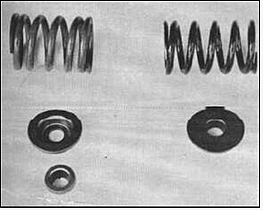

Part 2 - Page 2
Part 2 - Page 2 |
During the test on the cam, we noticed that the ignition (in its stock form) was rather unwilling to cope with anything over 5000 rpm since point float was encountered. We cured this situation by adding more point pressure with the installation of dual springs tailored to 36 ounces of tension. This stabilized the points up to our desired goal of 5500 rpm.
At this time, we felt the little six was crying for more fuel so we decided to investigate the possibility of adapting vacuum control slide-type side draft carburetors. We hoped these would cure the low hood line problem, as well as take care of the inevitable flat spots encountered when using large venturi areas on small engines. Since the cylinder head employs an integrally cast manifold, it was absolutely necessary to do some work in this area. We decided to remove the head and secure some stock exhaust flanges with short pieces of attached tubing.
We then proceeded to the local boneyard and came up with two 1 3/4-inch SU British carburetors from a Jaguar, noting that the cast aluminum |

At left is the valve spring and retainers from a standard 200 cubic inch engine, and on the right is the Isky spring and the Ford retainer No, C20Z-6514-A.
|
air cleaner (manifold and all) could be placed into the engine compartment very nicely. So we cut the steel tubes off approximately 1-inch (in length), mounted the SU's on these tubes, and centered the whole setup on the intake manifold. Then we scribed a pattern, drilled out the necessary holes, and brazed the flanges onto the intake manifold. Since the manifold is of thin-wall casting, the brazing was a very simple job, and anyone (even in East Snowshoe, Montana) could perform the same operation with dispatch. |
Here's the setup that netted 115 rear wheel hp at 4800 rpm. Head makes use of two 1 3/4-inch SU Jaguar carbs, Quarter-mile speed was 81 with this combo.
|
We also wanted to try some other slide venturi carburetors; namely, those used on the 450 Honda motorcycle. Since they are only 37mm in size, we decided to try four, so a couple more flanges were added for the subsequent tests.
Meanwhile, back at the barn, we had the setup all ready for the tryout with the two SU's. After installing two carburetors rebuild kits (for $13.00), we were ready to go racing. By the way, the used SU carbs cost us $20.00. New they are $55.00 each.
The throttle hookup was relative simple. We merely clamped a 5/16-inch throttle arm onto the SU shaft, ran a direct rod to the standard Ford bellcrank and everything worked out nicely.
Our first test with the SU's indicated a lean mixture condition, so a visit to our local Jaguar dealer turned up some SY needles that worked out perfectly for this installation. |
Our theory about the slide valve carburetion netted us a very fine batch of horsepower plus a couple of big carburetors that you can stick your foot in anytime and any place. They don't cough, hesitate or spit back... they just GO!
For a good all-around setup, it would be difficult to beat this one. When making the changeover, it is advisable to use the manual choke setup which is operated most easily by a Bowden cable. |
|
|
|